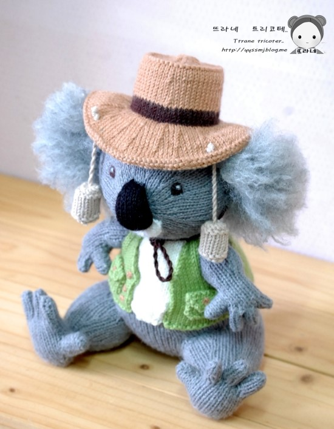

현지에서는 네이티브베어(native bear)라고 하며, 아기보기곰·나무타기주머니곰·네이티브베어라고도 한다.
몸길이 60∼80㎝이고, 몸무게 수컷 약 10.5㎏, 암컷 약 8.2㎏이다.
영장류가 아니면서도 유일하게 지문이 있다.
꼬리는 너무 짧아서 잘 보이지 않는다. 비경(鼻鏡)은 크고 밖으로 드러나 있다.
입속에 볼주머니가 있고, 배에 육아낭이 있다.
앞발과 뒷발은 편평하고 크다. 앞발의 첫째발가락과 둘째발가락은 셋째발가락과 마주보고,
뒷발의 둘째발가락과 셋째발가락은 피막(皮膜)으로 이어져 있으며,
첫째발가락은 다른 발가락과 마주본다. 발가락에 발톱은 없지만 물건을 붙잡는 데 알맞게 발달되어 있다.
털은 양털과 같이 부드럽고 조밀한데, 귀의 털이 특히 길다.
털빛깔은 지리적인 위치에 따라서 회색에서 갈색까지 다양하다.